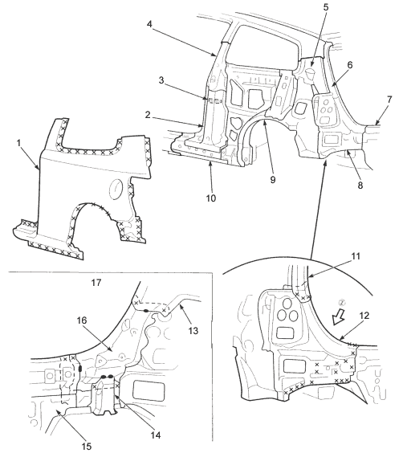

 |
- OUTER PANEL
- CENTRE PILLAR STIFFENER LOWER
- CENTRE PILLAR SEPARATOR
- CENTRE PILLAR STIFFENER UPPER
- REAR INNER PILLAR
- REAR PILLAR GUTTER UPPER
- REAR PANEL
- REAR PILLAR GUTTER LOWER
- REAR INNER PANEL
- SIDE SILL REINFORCEMENT
- REAR PILLAR GUTTER UPPER
- REAR PILLAR GUTTER LOWER
- REAR INNER PILLAR
- REAR PANEL GUSSET
- REAR PANEL
- REAR GUTTER LOWERS STIFFENER
- VIEW (Z)
|